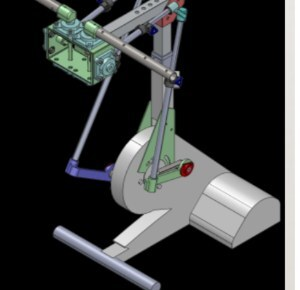
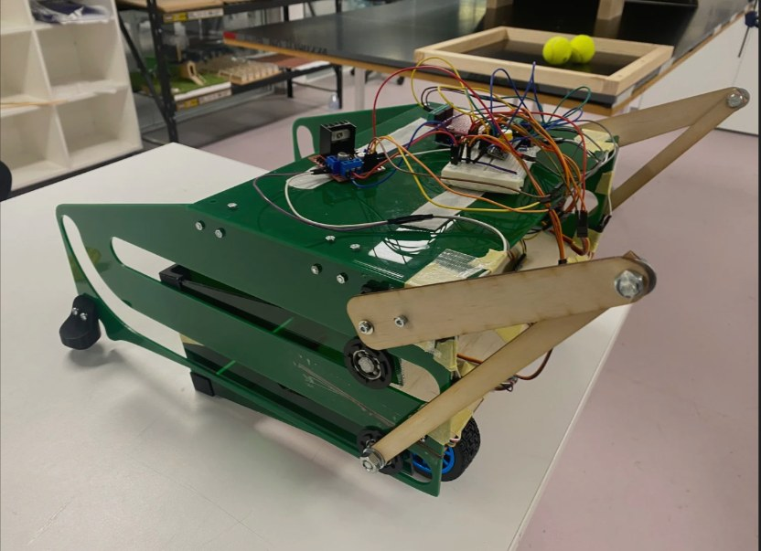

Mechanical Engineering · Brisbane, AU
Issey Siele
Design. Analyse. Build.
Mechanical Engineering (Honours) and Computer Science student at Griffith University, focused on mechanical systems, control, CAD modelling, and engineering analysis.
Fig. 01 / Exploded Assembly Study
Selected Work
Featured Projects
Two projects that show both sides of my engineering development: structured technical analysis, and hands-on, team-based design and build.
Internship · Kinematics

RT300 Upper-Limb Retrofit Kinematic Analysis
Kinematic analysis of an upper-limb retrofit mechanism for a rehabilitation ergometer, including CAD modelling and motion evaluation.
View Case Study
Team Project · Build

Warman Design and Build Project
A team-based design challenge involving concept development, prototyping, testing, and iterative improvement.
View Case Study